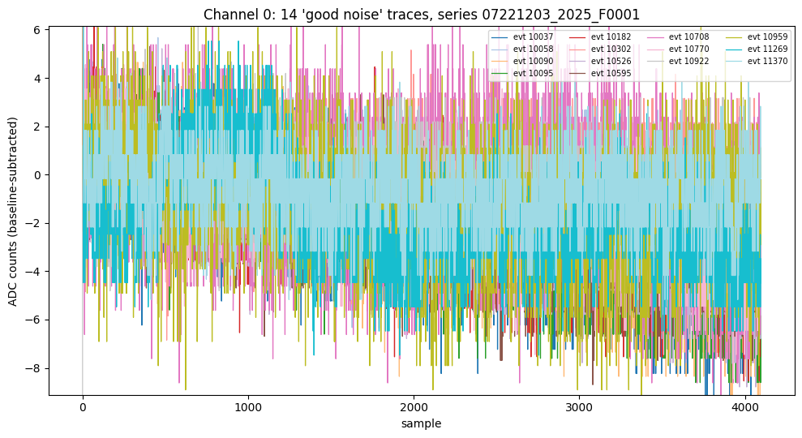
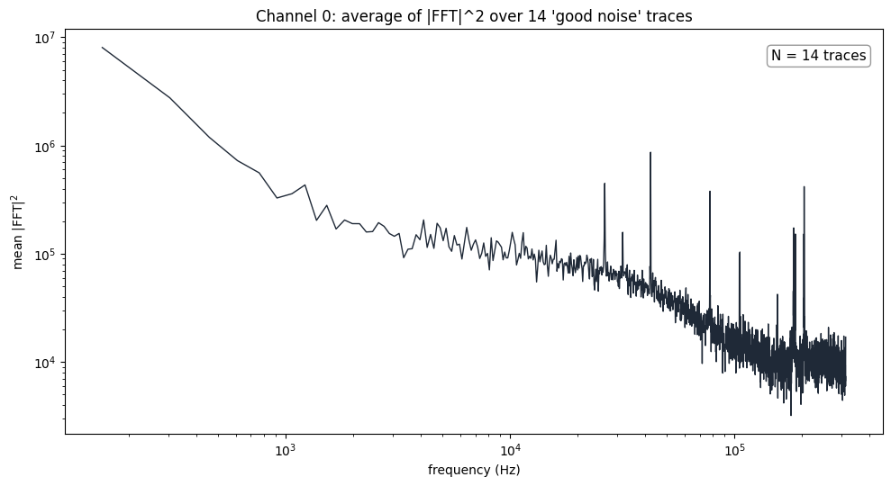

good_pulses_overlay.ipynb — time-domain overlay, FFT, and average power spectrum (this note); the later sections belong to Note 6 and Note 7. Pinned to b1b88ee.good_noise_traces.csv — the 21-trace selection this note starts from (from the original dump1_noise_pulses.ipynb: bstd cap 5, ratio threshold 2.45). Pinned to f03ce14.The 21 traces in good_noise_traces.csv came from the first, cruder noise cut (see Note 2). Restricting to Channel 0, the best-represented channel in that set, leaves 14 traces from series 07221203_2025, dump F0001.
Each trace is baseline-subtracted with the mean of its own pretrigger window. A couple of the traces have a single-sample startup transient in the first few dozen samples, a known quirk of this digitizer data rather than a real pulse. The plot’s y-axis is clipped to the 0.5–99.5 percentile of all plotted samples so the transient does not wash out the noise texture.

The real FFT (np.fft.rfft) is taken of every trace. The sample period is 1.6 µs (625 kHz sample rate, supplied by the user; it is not recorded elsewhere in the repository), so with 4096 samples per trace the bins are 152.6 Hz wide and run up to the 312.5 kHz Nyquist frequency. The power spectrum is spectrum × conj(spectrum) (its imaginary part is zero by construction), plotted log–log with the DC bin dropped. Averaging the 14 spectra bin by bin gives a first noise PSD estimate:

|FFT|2 over the 14 traces, log–log, real Hz.The average falls steeply from about 8×106 at 150 Hz to ~2×105 near 2–3 kHz, stays roughly flat out to ~20 kHz, then rolls off to a floor near 104 above ~100 kHz. Several sharp peaks (near 26, 42, 78, 105 and 204 kHz, among others) sit on top of it. Where those peaks come from is the subject of Note 7.
|FFT|2, not a normalized one-sided PSD in units per Hz. Golwala’s SLAC thesis (Appendix B, “Noise and Optimal Filtering”) puts a 1/N on the forward transform, opposite to NumPy, so the absolute scale here is not directly comparable to it.